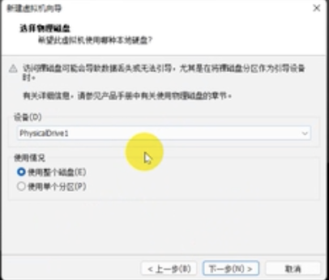

$$ \Huge \textbf{安装Linux To Go} $$
$$ \boxed{ \overbrace{\textit{degaokaolization}}^{\small{去高考化}} \text{ Discussion Group | Practice 01 }} $$
大家可能会说: "我感觉Windows的命令行界面好简陋啊, 快点让我看看Linux的命令行吧! " 不错, Linux的命令行确实很好用. 或者说所有的命令都是用基本上Linux里面都可以用命令行实现.
下面, 我们试着把Ubuntu 22.04安装到U盘里面, 来简单体验一下.
提示. 我们推荐大家使用机房的电脑安装. 因为机房的电脑带有自动还原的保护卡, 因此如果有什么问题, 格式化U盘之后, 重启计算机即可.
警告. 本操作有风险. 如果现在没有准备好, 或者认为基本知识不是很充足, 那么将来在做也不迟. 不用着急.
我们需要的原料很简单: 一块 \(\geq 64\texttt G\) 的U盘, 一台x86_64架构的运行windows的计算机. 以及WMWare虚拟机. 我们可以不用序列号, 选择免费试用即可.
说明. 以下大部分插图来自这个视频, 因为我没有可以使用的电脑.
先把U盘插入计算机, 然后启动VMWare.
然后, 在VMWare Workstation的文件下点击新建虚拟机, 选择自定义(高级)选项. 先完成一些比较基本的东西, 对于名字之类的可以按照自己喜好的设置, 但在安装的系统之类的内容需要按照说的来做:
下面进入关键的一步骤: 选择安装虚拟机的磁盘为这个U盘. 选择如图所示的选项
之后, 选择插入的USB. \(\color{red}\boxed{一定再三确认这个盘就是你要装的盘. }\) 当只有一个的USB的时候, 一般会显示PhysicalDrive1, 并且选择使用整个磁盘.

然后一路下一步, 直到完成即可. 虚拟机的环境准备完毕.
在Ubuntu的官方网站上可以下载镜像. 稍微等一等, 应该不算慢.
之后, 把Ubuntu的镜像装到VMWare的虚拟机里面. 在编辑虚拟机设置里面, 选择CD/DVD, 把刚刚的ISO文件放进去.
点击开启虚拟机.
弹出桌面之后, 在安装界面选择Try Ubuntu. 我们建议大家选择英文版, 因为英文版的报错信息很明确, 上网上搜索解决问题会比较快速.
在出现安装的时候, 选择"Minimal Installation".
我们还要对于整个内容分区. 先删掉U盘的所有分区, 创建第一个分区为Boot, 设置为如下的:
注意这个大小需要修改为500MB.
剩下的就是EFI文件系统了. 再新建一个分区如图:
这个大小不用修改.
然后继续安装就好了. 注意在继续安装的时候选择Minimal install. 否则安装的途中可能会出现问题.
$$ -\text{Not }\mathscr {E}\text{nd of the note}- $$